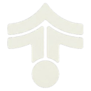

Impeccable alternatives (2026)
Quick answer: The top picks on this list are Archify, Aider and Loop Engineering. They lead 11 matching tools, ranked by GitHub stars on each listing. Pricing is what each maker states. Read each listing before you choose. Sources checked November 13, 2026. No vendor paid for a position.
Ranked comparison (top 10)
Dated .
| # | Tool | Pricing | Best for | Open source | Runs locally | GitHub stars |
|---|---|---|---|---|---|---|
| 1 | Open source | write code, make diagrams | Yes | Self-hosted | 94,965 | |
| 2 | Open source | write code, voice & phone calls | Yes | Self-hosted | 49,825 | |
| 3 | Open source | write code | Yes | Self-hosted | 11,669 | |
| 4 | Open source | write code | Yes | Self-hosted | 1,598 | |
| 5 |  TasteCode | Open source | write code, control a computer | Yes | Offline | 538 |
| 6 | Freemium | write code, voice & phone calls | No | 6 | ||
| 7 | Open source | write code, run code safely | Yes | Self-hosted | ||
| 8 | Open source | write code, control a computer | Yes | Self-hosted | 223,180 | |
| 9 | Paid | write code, automate workflows | No | 153,919 | ||
| 10 | Open source | write code, connect tools via MCP | Yes | 150,320 |
How we rank: GitHub stars on each listing. Stars and maturity come from each AgentScout listing. No vendor paid for a position.
Updated / sources checked .
Impeccable is a coding tool: Impeccable gives coding agents a design vocabulary: install it into a project and steer with commands such as polish and bolder, review with critique and audit, and catch typical AI-generated design clichés before they ship; works with Claude Code, Cursor, Codex CLI, Copilot, Gemini CLI and more. Pricing, as the maker states it: Open source. Its GitHub repo has 106,611 stars. We found 301 tools in the directory that do overlapping work (writing code, coding in the terminal); 247 of them are open source and 28 list a free or freemium plan. Below are the 10 closest, ranked by how many tasks and sub-tasks they share with Impeccable, then by GitHub stars.
Updated
 Archify (Open source): Archify is an Apache-2.0 agent skill for Cursor, Claude Code, Codex CLI and OpenCode that turns an idea, plan or whole codebase into an interactive HTML diagram you can explore, follow source links through and share, from repository maps to learning paths and travel plans. Consider it because it also covers codebase context and code search and planning and task tracking.
Archify (Open source): Archify is an Apache-2.0 agent skill for Cursor, Claude Code, Codex CLI and OpenCode that turns an idea, plan or whole codebase into an interactive HTML diagram you can explore, follow source links through and share, from repository maps to learning paths and travel plans. Consider it because it also covers codebase context and code search and planning and task tracking. Aider (Open source): Aider is an Apache-2.0 AI pair programmer in your terminal: you start a new project or work in an existing repo, and it edits files across 100+ languages using a map of your whole codebase, then commits each change to git with a sensible message. It works with Claude, DeepSeek, OpenAI models and almost any other LLM, including local models, and also supports voice input, images and web pages as context and linting and testing after each edit. Consider it because it also covers codebase context and code search and voice and phone agents.
Aider (Open source): Aider is an Apache-2.0 AI pair programmer in your terminal: you start a new project or work in an existing repo, and it edits files across 100+ languages using a map of your whole codebase, then commits each change to git with a sensible message. It works with Claude, DeepSeek, OpenAI models and almost any other LLM, including local models, and also supports voice input, images and web pages as context and linting and testing after each edit. Consider it because it also covers codebase context and code search and voice and phone agents. Loop Engineering (Open source): Practical patterns, starters & CLI tools for loop engineering with AI coding agents. Design systems that prompt and orchestrate agents (inspired by Addy Osmani and Boris Cherny). Consider it because it also covers multi-agent orchestration.
Loop Engineering (Open source): Practical patterns, starters & CLI tools for loop engineering with AI coding agents. Design systems that prompt and orchestrate agents (inspired by Addy Osmani and Boris Cherny). Consider it because it also covers multi-agent orchestration. Beautiful Rust (Open source): Three Agent Skills plus a drop-in clippy config that teach coding agents to write, review and port idiomatic Rust. rust-best-practices loads whenever an agent writes Rust and steers it toward robust, maintainable code; rust-review produces a prioritised report where each finding cites the rule it breaks and shows the fix; rust-port moves C, C++, Python, Go or JavaScript to Rust by porting the original tests first so behaviour can be proven equal. Distilled from the Google Rust Style Guide, Rust API Guidelines, Effective Rust, Rust Design Patterns and Microsoft's Pragmatic Rust Guidelines; works with Claude Code, Codex, Copilot, Cursor and Gemini CLI. MIT. Consider it because it also covers rules, skills and config.
Beautiful Rust (Open source): Three Agent Skills plus a drop-in clippy config that teach coding agents to write, review and port idiomatic Rust. rust-best-practices loads whenever an agent writes Rust and steers it toward robust, maintainable code; rust-review produces a prioritised report where each finding cites the rule it breaks and shows the fix; rust-port moves C, C++, Python, Go or JavaScript to Rust by porting the original tests first so behaviour can be proven equal. Distilled from the Google Rust Style Guide, Rust API Guidelines, Effective Rust, Rust Design Patterns and Microsoft's Pragmatic Rust Guidelines; works with Claude Code, Codex, Copilot, Cursor and Gemini CLI. MIT. Consider it because it also covers rules, skills and config.- TasteCode (Open source): TasteCode is an Apache-2.0 desktop workspace for AI coding agents aimed at creative work: it runs Codex, Claude Code and Grok in one app while keeping orchestration, terminal access, diffs, checkpoints and history on your machine, and adds a Design Mode for inspecting and editing web interfaces. It is an early beta for Windows and macOS. Consider it because it also covers code review and computer and desktop control.
 Coddo (Freemium): Desktop app that puts a visual interface and voice input on top of terminal coding agents. Consider it because it also covers voice and phone agents and computer and desktop control.
Coddo (Freemium): Desktop app that puts a visual interface and voice input on top of terminal coding agents. Consider it because it also covers voice and phone agents and computer and desktop control. HTML Anything (Open source): An agentic HTML editor from the Open Design team. Your local coding-agent CLI (Claude Code, Cursor, Codex, Gemini and others) writes HTML decks, posters, reports and prototypes from 75 skills, shows them in a sandboxed preview, and exports in one click. No API key is needed. Consider it because it also covers sandboxes and secure execution and local and self-hosted.
HTML Anything (Open source): An agentic HTML editor from the Open Design team. Your local coding-agent CLI (Claude Code, Cursor, Codex, Gemini and others) writes HTML decks, posters, reports and prototypes from 75 skills, shows them in a sandboxed preview, and exports in one click. No API key is needed. Consider it because it also covers sandboxes and secure execution and local and self-hosted. opencode (Open source): OpenCode is an MIT-licensed open-source AI coding agent for the terminal, with a beta desktop app, that works with many model providers instead of locking you to one. Install it with a one-line script, npm, Homebrew, pacman, mise or Nix, then let it read your repository, edit files and run commands from a keyboard-driven TUI. Consider it because it also covers computer and desktop control and editing and rough cuts; it has more GitHub stars (223,180 vs 106,611).
opencode (Open source): OpenCode is an MIT-licensed open-source AI coding agent for the terminal, with a beta desktop app, that works with many model providers instead of locking you to one. Install it with a one-line script, npm, Homebrew, pacman, mise or Nix, then let it read your repository, edit files and run commands from a keyboard-driven TUI. Consider it because it also covers computer and desktop control and editing and rough cuts; it has more GitHub stars (223,180 vs 106,611). Claude Code (Paid): Claude Code is Anthropic's agentic coding tool that lives in your terminal, understands your codebase and carries out routine tasks, explains complex code and handles git workflows through natural-language commands. It also runs in IDEs and on GitHub when you tag @claude, and installs via a native script, Homebrew or WinGet (the npm install is deprecated). Consider it because it is a managed commercial product, if you'd rather not run it yourself; it also covers codebase context and code search and workflow automation; it has more GitHub stars (153,919 vs 106,611).
Claude Code (Paid): Claude Code is Anthropic's agentic coding tool that lives in your terminal, understands your codebase and carries out routine tasks, explains complex code and handles git workflows through natural-language commands. It also runs in IDEs and on GitHub when you tag @claude, and installs via a native script, Homebrew or WinGet (the npm install is deprecated). Consider it because it is a managed commercial product, if you'd rather not run it yourself; it also covers codebase context and code search and workflow automation; it has more GitHub stars (153,919 vs 106,611). CC Switch (Open source): Desktop manager for Claude Code, Codex, Gemini CLI, OpenCode, OpenClaw and other coding agents that switches API providers in one click and manages MCP servers, skills and prompts. Consider it because it is ready to use without building anything; it also covers computer and desktop control and MCP servers; it has more GitHub stars (150,320 vs 106,611).
CC Switch (Open source): Desktop manager for Claude Code, Codex, Gemini CLI, OpenCode, OpenClaw and other coding agents that switches API providers in one click and manages MCP servers, skills and prompts. Consider it because it is ready to use without building anything; it also covers computer and desktop control and MCP servers; it has more GitHub stars (150,320 vs 106,611).
Impeccable vs alternatives at a glance
| Tool | Pricing | Open source / licence | GitHub stars | Good for |
|---|---|---|---|---|
| Open source | Apache License 2.0 | 106,611 | writing code, coding in the terminal | |
| Open source | Apache License 2.0 | 94,965 | writing code, coding in the terminal | |
| Open source | Apache License 2.0 | 49,825 | writing code, coding in the terminal | |
| Open source | Yes | 11,669 | writing code, coding in the terminal | |
| Open source | Yes | 1,598 | writing code, coding in the terminal | |
| TasteCode | Open source | Yes | 538 | writing code, coding in the terminal |
| Freemium | No | 6 | writing code, coding in the terminal | |
| Open source | Yes | — | writing code, coding in the terminal | |
| Open source | MIT | 223,180 | writing code, coding in the terminal | |
| Paid | Proprietary (All rights reserved; Anthropic Commercial Terms of Service) | 153,919 | writing code, coding in the terminal | |
| Open source | MIT | 150,320 | writing code, coding in the terminal |
More
Related searches
Alternatives are picked from directory data only: same category plus shared tasks and sub-tasks. Pricing is as each maker states it; GitHub stars as recorded on each listing.